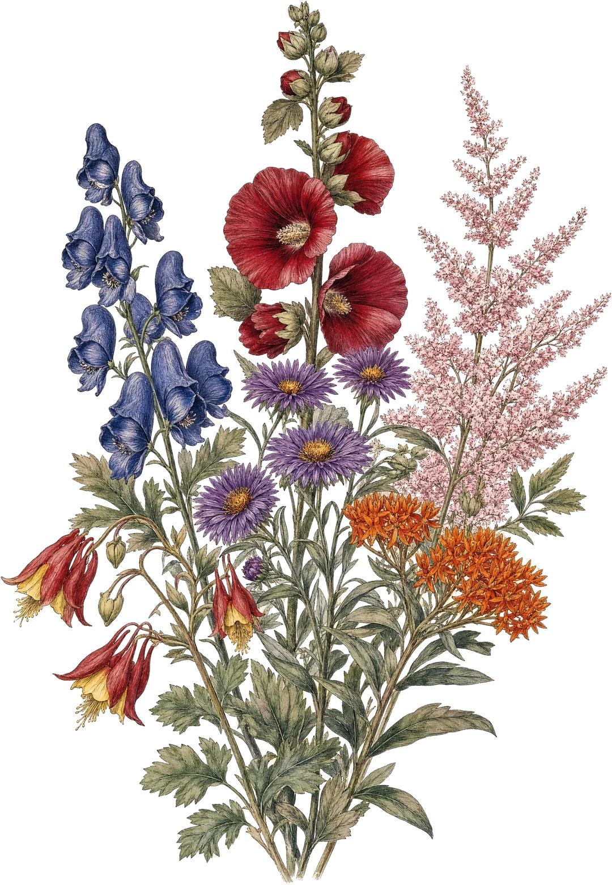
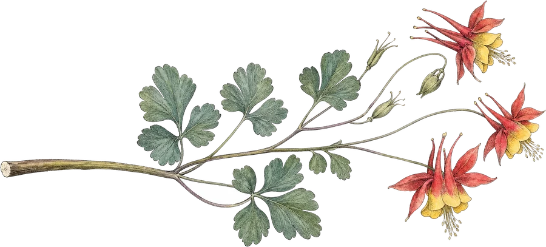

Everything here has already survived a Glover winter.
A Zone-3 nursery in Vermont's Northeast Kingdom, where every plant is raised from seed or division by hand — and where the gardens, the river, the craft shop and three antique guest rooms are all open to you.



A breathtaking succession of flowering.
The whole craft of a Zone-3 garden is sequence — something coming into bloom as something else goes over. Drag through the season and see what is holding the garden up.


Four reasons people drive up here.
The grounds
Display gardens, the river's edge, picnic tables among the flowers. Eight stops you can walk before you come.
Take the tour → 02The catalogue
793 varieties, field-grown or potted, each described in Kate's own words. Search it by colour, light or habit.
Search plants → 03Landscaping
Design, installation and maintenance — site clearing, stone work, pruning, pond work.
See services → 04The guest rooms
Three themed rooms in a restored 1800s Greek Revival, open year-round.
Stay the night →